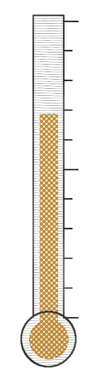
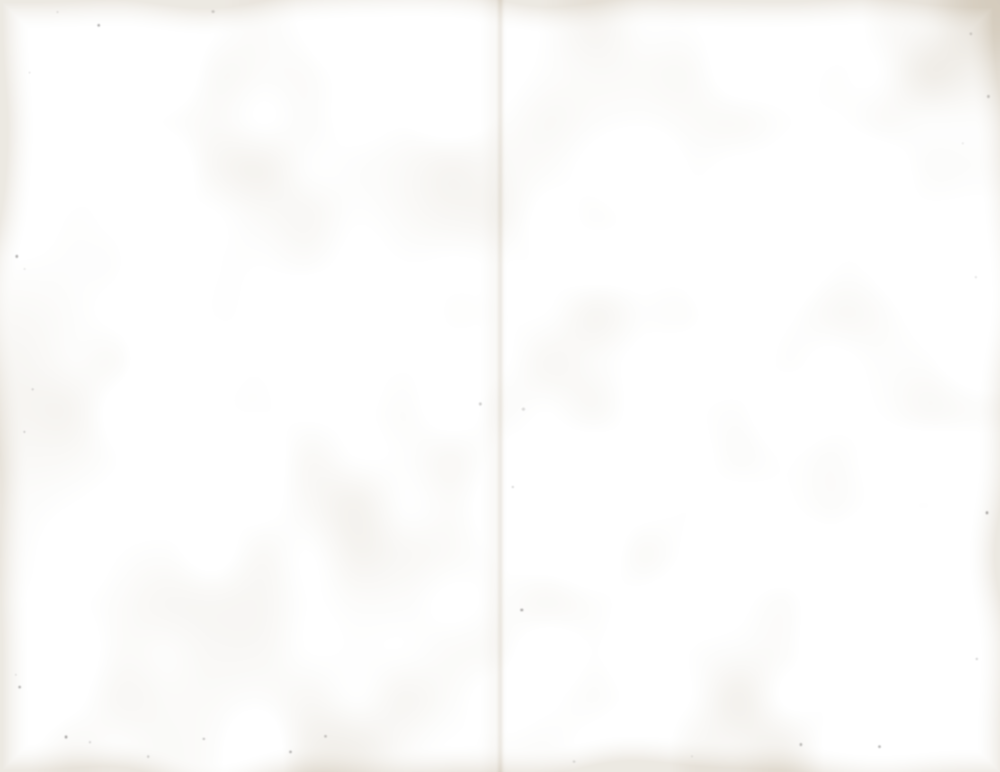

ST. CECILIA’S CHURCHFROM THE RECTORY
BANNS OF MARRIAGE
Loretta Castorini and John Cammareri, both of this parish. First time of asking.
Anthony Ferraro and Donna Lisi, second time.
Objections? Please see the pastor.
PLEASE PRAY FOR THE SICK
Mrs. Cammareri (in Palermo), Frank Spina, Ann Marie Doyle and our homebound.
ON THE FRONT STEPS
Dog walkers, please keep the steps clear before the 9 o’clock Mass. This means the gentleman with all the dogs.
BINGO
Every Tuesday, 7:30 PM, school hall.
LAST SUNDAY’S COLLECTION
Envelopes and loose $3,418.50
Roof fund $612.00
The roof fund now stands at $27,200 of $40,000. Thank you.

40,000
20,000
HOLY NAME SOCIETY$5.00
Communion breakfast after the 9 o’clock Mass, school cafeteria. Juice and coffee included. Children $3.00.
Eggs in the hole
Thick white toast fried in butter with a ring of red pepper, the yolk left soft in the middle.
Sausage and home fries
Sweet links from the pork store, potatoes crisped with onion.

The Parish Council invites you to the
Bella Luna
DINNER DANCE
Saturday at 7 PM, school hall. Music by the Sal Esposito Trio. $22.50 a person, tickets at the rectory.
DINNER
Antipasto
Salami, provolone, roasted peppers and olives.
Escarole soup
Tiny meatballs, grated cheese.
Baked ziti
Ricotta and mozzarella in Sunday gravy.
Chicken scaloppine
Cutlets pounded thin, floured and sautéed with lemon, white wine, capers and butter.
Sheet cake
Coffee and anisette to finish.
CASH BAR
Amaretto sour2.50
Shaken frothy with lemon and egg white, over ice, with a cherry.
Highballs2.50
Rye and ginger ale, scotch and soda.
House wine2.00
Red or white.
Beer1.50
Cold, by the bottle.
Soda.75
For the children.
ROSARY SOCIETY BAKE SALEafter every Mass
Rosemary focaccia4.00
Olive oil bread from sheet pans, dimpled, with coarse salt. Slices .75
Cannoli1.00
Sweet ricotta and grated orange peel, ends dipped in chocolate. Filled to order.
Also pignoli and rainbow cookies by the pound.
